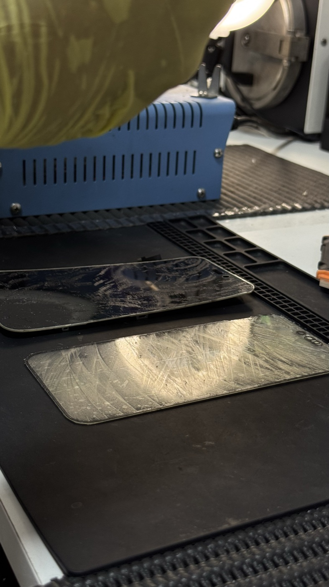
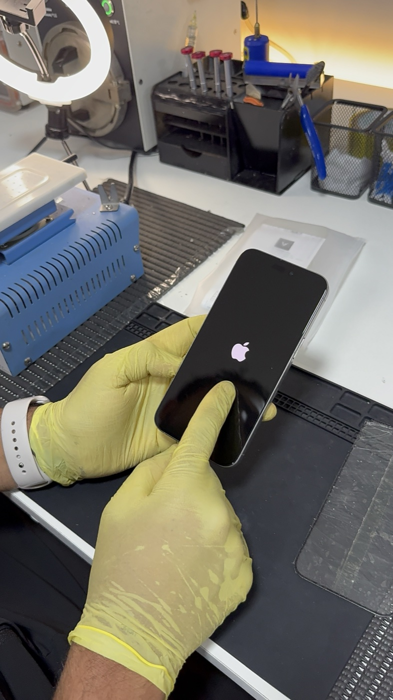

O vidro do iPhone trincou. A primeira pergunta que surge é sempre a mesma: preciso trocar a tela inteira ou dá para trocar só o vidro? A resposta depende do que está danificado — e entender essa diferença pode significar uma economia real de centenas de reais.
Neste artigo, explicamos como o conjunto de tela do iPhone é construído, quando a troca de vidro é possível, como o processo funciona no laboratório e o que diferencia um reparo bem feito de um mal feito.
Como é construída a tela do iPhone
A tela do iPhone não é uma peça única — é um conjunto de camadas coladas entre si com adesivo óptico (OCA) e presas ao chassi do aparelho. As principais camadas são:
- Vidro frontal (cover glass) — a camada externa que você toca. É ela que trinca primeiro em quedas.
- Digitalizador (touch) — camada fina com sensores capacitivos integrados ao vidro ou ao display, dependendo do modelo.
- Display OLED ou LCD — o painel que gera a imagem. Nos iPhones modernos (iPhone X em diante), é OLED — a tecnologia de maior qualidade de imagem e também a mais cara para substituir.
Nos modelos com OLED, o digitalizador é integrado diretamente ao painel — o que significa que o vidro é a única camada que pode ser trocada isoladamente, desde que o display e o touch estejam funcionando perfeitamente.
Quando é possível trocar só o vidro
A troca isolada do vidro é indicada quando o iPhone apresenta vidro trincado ou lascado, mas a imagem e o toque continuam funcionando normalmente. Nesse cenário, o display OLED original está intacto — e é exatamente o que queremos preservar.
Os sinais de que o display ainda está íntegro:
- A imagem aparece normalmente, sem manchas escuras, linhas ou pixels mortos
- O toque responde em toda a área da tela, mesmo sobre as trincas
- Não há sombras ou áreas com brilho diferente do resto da tela
- O Face ID continua funcionando normalmente
Por que preservar o OLED original importa: O painel OLED de fábrica da Apple passa por calibração individual em cada iPhone — cor, brilho, True Tone e fidelidade de imagem são ajustados para aquela unidade específica. Um display substituto, mesmo de boa qualidade, raramente atinge o mesmo nível de calibração do original.
Quando a troca de vidro NÃO é possível
Existem situações em que o dano vai além do vidro e a troca do conjunto completo é necessária:
- Manchas escuras ou "tinta" espalhando — sinal de que o OLED foi comprimido na queda e está danificado internamente
- Linhas verticais ou horizontais na imagem — indica falha no painel de display
- Toque sem resposta em partes da tela — digitalizador danificado
- Tela completamente preta com o aparelho ligado — ruptura do cabo flat ou falha no display
- Vidro pulverizado ou com lascas profundas — o impacto provavelmente danificou as camadas inferiores
Como funciona a troca de vidro no laboratório
A troca de vidro é um procedimento de precisão óptica — diferente da troca comum de tela, que é mecânica. Veja como fazemos na iSolder:
1. Diagnóstico completo antes de tudo
Antes de qualquer intervenção, testamos a tela em todas as suas funções: toque, imagem, True Tone, brilho automático e Face ID. Só confirmamos a viabilidade da troca de vidro após essa verificação.
2. Aquecimento controlado e separação do vidro
O vidro trincado é separado do display usando uma placa de aquecimento a temperatura controlada — geralmente entre 70°C e 80°C. O calor amolece o adesivo OCA que une as camadas sem danificar o OLED. A separação é feita com fio de molibdênio ultrafino, passado manualmente entre as camadas.

Esse é o ponto crítico do procedimento — velocidade, temperatura e pressão incorretas podem danificar o display que estava intacto. É aqui que a experiência do técnico define o resultado.
3. Limpeza do adesivo residual
Após remover o vidro trincado, o display fica coberto de resíduos do adesivo OCA. Essa camada é removida completamente com solventes adequados e instrumentos de precisão sob microscópio. Qualquer resíduo que permaneça entre o vidro novo e o display causará bolhas ou distorção óptica visível.
4. Laminação do vidro novo e cura UV
O vidro novo é posicionado sobre o display com alinhamento milimétrico. Aplicamos adesivo OCA e prensamos em câmara de vácuo, que elimina qualquer bolha de ar entre as camadas. O adesivo é então curado com luz UV por tempo controlado.
5. Testes finais
Com o reparo concluído, testamos imagem, toque, Face ID, True Tone e brilho automático. O aparelho só é liberado após aprovação em todos os pontos — ligando normalmente no laboratório antes de ir para o cliente.

Veja na prática: troca de vidro feita por nós
Gravamos o processo completo de uma troca de vidro real no laboratório. Dá para acompanhar cada etapa — do vidro trincado ao iPhone funcionando com tela nova:
Quanto custa e quanto economiza
A troca de vidro custa significativamente menos do que a troca do conjunto de tela completo — especialmente nos modelos Pro e Pro Max, onde o display OLED original pode custar de R$ 800 a R$ 1.500 ou mais na reposição. A troca do vidro, quando viável, representa uma economia de 50% a 70% em relação à troca completa, além de manter o display original do aparelho.
Atenção com preços muito baixos: A troca de vidro exige equipamento específico (placa de aquecimento, câmara de vácuo, lâmpada UV) e técnico experiente. Oficinas que oferecem o serviço a preço muito abaixo do mercado frequentemente causam dano ao OLED durante o processo — e o que era só o vidro vira uma troca de tela completa.
Modelos compatíveis com troca de vidro
Na iSolder, realizamos troca de vidro nos principais modelos com OLED:
- iPhone X, XS e XS Max
- iPhone 11 Pro e 11 Pro Max
- iPhone 12, 12 Pro e 12 Pro Max
- iPhone 13, 13 Pro e 13 Pro Max
- iPhone 14, 14 Pro e 14 Pro Max
- iPhone 15, 15 Pro e 15 Pro Max
- iPhone 16, 16 Pro e 16 Pro Max
- iPhone 17, 17 Pro e 17 Pro Max
Atendemos de todo o Brasil
Se você está fora de Itaguaí, pode enviar o aparelho via SEDEX. Realizamos o diagnóstico, confirmamos a viabilidade da troca de vidro e entramos em contato antes de qualquer procedimento. O aparelho retorna com garantia de 6 meses no serviço realizado.